측량및지형공간정보산업기사 (2008-05-11 기출문제)
1과목: 응용측량
1. 유량측정장소의 선정 조건에 해당되지 않는 것은?
- 교량, 그 밖의 구조물에 의한 영향을 받지 않는 곳
- 와류와 역류가 생기지 않는 곳
- 유수방향이 최다 방향으로 나누어지는 곳
- 합류에 의하여 불규칙한 영향을 받지 않는 곳
(정답률: 알수없음)

2. 교정이 기점에서 450m의 위치에 있고 교각이 30°, 중심말뚝길이가 20m 일 때 외할(E)이 5m라면 시단현의 길이는?
- 2.8m
- 4.9m
- 8.0m
- 9.8m
(정답률: 알수없음)
3. 클로소이드 곡선의 매개변수(A)를 2배 늘리면 곡선 반지름(R)이 일정할 때 완화 곡선길이(L)는 몇 배가 되는가?
- √2
- 2
- 4
- 8
(정답률: 알수없음)
4. 어떤 광산의 자침편차가 7° 28‘E 이고, 어떤 측선의 자침방위가 S 50° 30'W 이었다. 그 측선의 진북방위각은?
- 223° 02‘
- 237° 58‘
- 57° 58‘
- 43° 02‘
(정답률: 알수없음)
5. 터널 내 두 점의 좌표가 각각 A(1328m, 810m), B(1734m, 589m)이고 지반고가 각각 86.30m, 112.40m 인 두점 AB를 연결하는 터널의 경사각은?
- 약 9°
- 약 7°
- 약 5°
- 약 3°
(정답률: 알수없음)
6. 단곡선 설치에 있어 교점(i.P) 위치로부터 기점까지의 거리가 614.32m, 곡선방경이 200m, 교각이 60° 일 때 접선의 길이(T.L)는 얼마인가?
- 53.59m
- 72.79m
- 115.47m
- 346.41m
(정답률: 28%)
7. 하천측량시 유제부에서 평면측량의 범위로 가장 적당한 것은?
- 제외지 이내
- 제외지 및 재내지에서 100m 이내
- 제외지 및 제내지에서 300m 이내
- 제내지 400m 이내
(정답률: 알수없음)
8. 하천의 수위관측소 설치 장소에 대한 설명 중 틀린 것은?
- 하안과 하상이 양호하고 세굴 및 퇴적이 없는 곳
- 지천에 의한 수위 변화가 생기지 않는 곳
- 교각등의 구조물에 의하여 수위에 영향을 받지 않는 곳
- 상ㆍ하부가 곡선으로 이어져 유속이 최소가 되는 곳
(정답률: 알수없음)
9. 그림과 같은 삼각형의 면적을 m:n으로 분할할 경우 관계식으로 옳은 것은? (단,
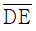
와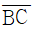
는 평행하다.)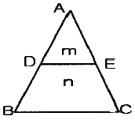
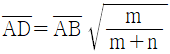
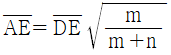
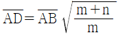
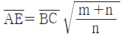
(정답률: 알수없음)
10. 토지분할 측량에 있어서 그림과 같이 면적 80m2의 △ABC에서 △ABP의 면적을 20m2으로 분할하여 할 때,
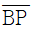
의 거리는 얼마로 해야 하는가? (단, BC=40m)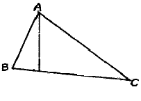
- 5m
- 10m
- 15m
- 20m
(정답률: 알수없음)
11. 터널 작업에서 갱외 기준점 측량에 대한 설명으로 틀린 것은?
- 터널 입구 부근에 인조점을 설치한다.
- 기준점을 서로 관련시키기 위해 기준점이 시통 되는 곳에 필요한 경우 보조 삼각점을 설치한다.
- 측량의 정확도를 높이기 위하여 가능한 후시를 짧게 한다.
- 고저측량용 기준점은 갱구 부근과 떨어진 곳에 2개소 이상 설치하는 것이 좋다.
(정답률: 알수없음)
12. 다음 중 유토곡선(Mass Curve)을 작성하는 목적과 거리가 먼 것은?
- 토공기계의 결정
- 토량의 배분
- 토랸의 운반거리 산출
- 토공의 단가 결정
(정답률: 알수없음)
13. 축척 1/1200 지도상의 면적을 축척을 1/600로 잘못 알고 측정하였더니 10000m2가 나왔다면 실제면적은?
- 40000m2
- 20000m2
- 10000m2
- 2500m2
(정답률: 알수없음)
14. 다음 중 댐 건설을 위한 조사측량에서 댐 사이트의 평면도 작성 방법으로 가장 적당한 것은?
- 평판측량
- 평판측량과 시거측량의 병용
- 지상사진측량 또는 항공사진측량
- 스타디아측량
(정답률: 알수없음)
15. 편각법에 의한 단곡선 설치 중 곡선 시점(B.C), 곡선 종점(E.C)에서 시준장애가 있는 경우에 병용할 수 있는 효과적인 방법은?
- 중앙종거법
- 현각현장법
- 전방교선법
- 2점 편각법
(정답률: 알수없음)
16. 하천 횡단측량에서 그림과 같이 AB선상 배 위에서 ∠a를 관측하였다. BP의 거리는 얼마인가?. (단, AB⊥BD, BD=50.0m, a=40° 30')
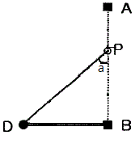
- 32.47m
- 38.02m
- 42.70m
- 58.54m
(정답률: 알수없음)
17. 구조물 경관예측을 위한 사전 조사항목으로 가장 거리가 먼 것은?
- 식생
- 지형
- 현황사진
- 지하배관
(정답률: 알수없음)
18. 삼사법에 의하여 면적을 계산할 때 정확도를 좋게 하기 위해 가장 이상적인 조건은?
- 삼각형의 정점을 공통되게 한다.
- 밑변을 공통되게 한다.
- 밑변과 높이를 같게 한다.
- 되도록 밑변을 높이보다 길게 한다.
(정답률: 알수없음)
19. 종단곡선의 설치에 관한 설명으로 맞는 것은?
- 평면선형이 급격히 변화하는 노선에서 차량의 안전한 주행을 확보하기 위해 설치한다.
- 종단곡선의 설치에는 원곡선을 이용하는 방법과 2차 포물선을 이용하는 방법이 있으며, 원곡선은 도로에, 2차포물선은 철도에 주로 사용된다.
- 종단곡선을 설치하기 위해서는 노선의 상향기울기 및 하향기울기에 따른 종단곡선의 길이가 먼저 결정되어야 한다.
- 종단경사도의 최대값은 도로에서는 10~35%로 하고, 철도에서는 2~9%로 한다.
(정답률: 알수없음)
20. 노선에 단곡선을 설치하고자 한다. 교점 부근에 하천이 있어 그림과 같이 A', B를 선정하여 α=36° 14‘ 20“, β=42° 26’ 40”를 얻었다면 곡선길이(C.L)는? (단, 곡선의 반지름은 224m임)
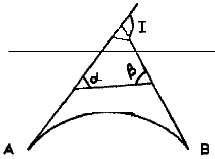
- 182.722m
- 307.615m
- 327.865m
- 559.663m
(정답률: 알수없음)
2과목: 사진측량 및 원격탐사
21. 다음 중 항공사진의 판독요소가 아닌 것은?
- 색조(tone)
- 형태(pattem)
- 시간(time)
- 질감(texture)
(정답률: 70%)
22. 초점거리 15cm, 사진의 크기 23cm×23cm인 사진기로 찍은 종중복도 60%인 밀착사진인화 필름을 입체시 했을 때 기선고도비는?
- 0.4
- 0.6
- 0.8
- 1.0
(정답률: 알수없음)
23. 수치영상자료는 대개 8 비트로 표현된다. picel 값의 그레이레벨 범위로 옳은 것은?
- 0~63
- 1~64
- 0~255
- 1~256
(정답률: 알수없음)
24. 다음 중 상호표정 인자로서 알맞은 것은?
- bx, by, bz, k, Ψ
- bx, by, k, Ψ, λ
- bx, bz, k, Ψ, λ
- bx, bz, k, Ψ, ω
(정답률: 알수없음)
25. 동서 30km, 남북 20km의 지역에서 1/5000의 항공사진 한 장의 스테레오 모델에 촬영된 면적이 16.3km2이다. 이 지역을 촬영하는데 필요한 사진 매수는? (단, 안전율은 30%이다.)
- 48장
- 55장
- 63장
- 68장
(정답률: 알수없음)
26. 다음 중 GIS의 하드웨어 구성 중 자료 출력 장비가 아닌 것은?
- 플로터
- 자동 제도기
- 프린터
- 해석 도화기
(정답률: 알수없음)
27. 조점거리가 150mm, 사진의 크기가 23cm×23cm, 촬영고도가 6000m인 항공사진의 실제 모델의 대지면적은? (단, 종중복도=55%, 횡중복도=30%로 가정)
- 66.66km2
- 26.66km2
- 36.60km2
- 20.16km2
(정답률: 알수없음)
28. 다음 용어에 대한 설명 중 틀린 것은?
- 수치지도작성이라 함은 컴퓨터를 이용한 수치도화, 지도입력 등 지형, 지물을 수치데이터로 취득하여 목적에 따라 편집하는 것을 말한다.
- 수치도화라 함은 지도형식의 도면으로 출력하기 위하여 정위치 편집된 성과를 지도도식규칙으로 편집하는 것을 말한다.
- 정위치 편집이라 함은 지리조사 및 현지보완측량에서 얻어진 성과 및 자료를 이용하여 도화성과 또는 지도데이터 입력성과를 수정, 보완하는 작업을 말한다.
- 구조화편집이라 함은 데이터간의 지리적 상관관계를 파악하기 위하여 정위치 편집된 지형, 지물을 기하학적 형태로 구성하는 작업을 말한다.
(정답률: 알수없음)
29. 다음 중 도형이나 속성자료의 호환을 위해 사용되는 포맷이 아닌 것은?
- ASCII 코드
- DCF
- JPG
- TIGER
(정답률: 알수없음)
30. 항공사진에 나타나는 사진지표를 서로 마주보는 것끼리 연결한 직선의 교점은?
- 연직점
- 주점
- 등각점
- 중력점
(정답률: 알수없음)
31. 수치사진측량의 영상정합(image matching)에 대한 설명 중 틀린 것은?
- 입체영상 중 한 영상의 대상물이 다른 영상의 어느 위치에 존재하는가를 탐색하는 작업을 말한다.
- 대응점을 찾기 위해 유사성 관측기법을 이용한다.
- 영상정합은 항공삼각측량의 접합점 및 연결점 탐색시 이용한다.
- 최소제곱정합법(least squares matching)은 형상기준정합(feature based matching)에 속한다.
(정답률: 알수없음)
32. 센서를 크게 수동방식과 능동방식의 센서로 분류할 때 능동방식 센서에 속하는 것은?
- TV 카메라
- 광학스캐너
- 레이다
- 마이크로파 복사계
(정답률: 알수없음)
33. 다음 중 사진측량의 장점에 해당되지 않는 것은?
- 축척변경이 용이하다.
- 기준점이 없어도 정도가 높은 도화기로 절대좌표를 환산할 수 있다.
- 넓은 지역의 경우 평판측량보다 신속하게 결과를 얻을 수 있다.
- 실내작업이 많고 분업화 되어 능률적이다.
(정답률: 알수없음)
34. 사진축척을 결정하는데 고려할 필요가 없는 것은?
- 도화축척, 등고선 간격
- 지방적 특색, 기상관계
- 사용사진기, 소요정도
- 사용목적, 사진기의 성능
(정답률: 알수없음)
35. 수치지도의 축척에 관한 설명 중 옳지 않은 것은?
- 축척에 따라 자료의 위치정확도가 다르다.
- 축척에 따라 표현되는 정보의 양이 다르다.
- 소축척을 대축척으로 일반화시킬 수 있다.
- 축척 1/5000 종이지도로는 축척 1/1000 수치지도 제작이 불가능하다.
(정답률: 알수없음)
36. 다음 중 래스터 자료의 압축기법이 아닌 것은?
- 이진 코드(binary code) 기법
- 체인 코드(chain code) 기법
- 블록 코드(block code) 기법
- 런 렝스 코드(run-length code) 기법
(정답률: 알수없음)
37. 사진 표정작업 중 절대표정에 해당 되지 않는 것은?
- 지구곡률 결정
- 축척 결정
- 수준면의 결정
- 위치 결정
(정답률: 알수없음)
38. DEM(Digital Elevation Model)과 TIN(Triangulated lrregular Network)의 주요 활용 분야가 아닌 것은?
- 토공량 산정
- 경사도 분석
- 가시권 분석
- 도로망 분석
(정답률: 알수없음)
39. 편위수정의 조건이 아닌 것은?
- 샤임 플러그 조건
- 광학적 조건
- 로세다 조건
- 기하학적 조건
(정답률: 알수없음)
40. 평탄한 토지를 초점거리 15cm인 카메라로 축척 1/20000로 찍은 항공사진상에 철탑이 찍혀 그 길이를 재었더니 1.2mm 이었다. 연직점에서 철탑정상까지 길이가 10cm였다면 이 철탑의 높이는?
- 36.0m
- 38.0m
- 44.0m
- 48.0m
(정답률: 알수없음)
3과목: GIS 및 GPS
41. 축척 1/50000 지형도에서 주곡선의 간격이 도면상에서 0.25mm로 나타낼 경우 이 지형의 경사각은?
- 29°
- 33°
- 58°
- 63°
(정답률: 알수없음)
42. 표준길이보다 3cm가 긴 30m의 줄자로 거리를 관측한 결과 두 점간의 거리가 300m이었다. 이 거리의 정확한 값은 얼마인가?
- 299.3m
- 299.7m
- 300.3m
- 300.7m
(정답률: 알수없음)
43. RTK-GPS에 의한 세부측량을 설명한 것으로 옳은 것은?
- RTK-GPS 관측에 의해 지형도 등의 작성에 필요한 수치 데이터를 취득하는 작업을 말한다.
- RTK-GPS 관측에 의해 구조물의 변형과 변위를 관측하는 작업을 말한다.
- RTK-GPS 관측에 의해 국가기준점인 삼각점을 설치하는 작업을 말한다.
- RTK-GPS 관측에 의해 국도 변에 설치된 수준점의 타원체고를 구하는 작업을 말한다.
(정답률: 알수없음)
44. 트랜싯으로 1회 각 관측을 할 때 생기는 우연 오차가 ±0.01m라 하면 16회 연속 각 관측을 했을 때의 전체오차는?
- ±0.04m
- ±0.08m
- ±0.16m
- ±0.32m
(정답률: 알수없음)
45. 트래버스측량에서 거리와 각 관측의 정밀도가 균형을 이룰 때 거리관측의 허용오차를 1/5000 로 한다면 각 관측에 허용되는 오차는?
- 25“
- 30“
- 38“
- 41“
(정답률: 알수없음)
46. 위성에서 송출된 신호가 수신기에 하나 이상의 경로를 통해 수신될 때 방생하는 현상을 무엇이라 하는가?
- 전리층 편의
- 대류권 지연
- 다중경로
- 위성궤도 편의
(정답률: 알수없음)
47. AB 사이의 거리관측에서 거리를 4구간으로 나누어 각 구간의 평균 제곱근 오차로 다음과 같은 값을 얻었다. 전 구간의 평균 제곱근 오차는 얼마인가?
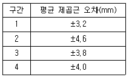
- ±3.9mm
- ±5.2mm
- ±7.9mm
- ±9.2mm
(정답률: 알수없음)
48. 1등 수준측량에서 2km 구간을 왕복 측량한 결과 관측값의 교차가 7mm 발생하였다. 이 경우 알맞은 처리 방법은?
- 허용 범위 내에 포함되므로 그대로 인정한다.
- 결과를 평균하여 고저차를 결정한다.
- 허용범위를 초과하지만 그 값이 작아 그대로 인정한다.
- 허용범위보다 크므로 다시 측량 한다.
(정답률: 알수없음)
49. 등고선을 표현할 때 등고선의 간격에 따라 구분하는 선의 종류에 대한 설명 중 틀린 것은?
- 계곡선은 주곡선의 수를 아는데 편리함을 주기 위하여 주곡선의 5개마다 1개의 굵은 실선으로 표시한다.
- 조곡선은 완만한 경사의 지형에서 주곡선만으로는 지형의 세부형태나 그 특징을 표현할 수 없는 경우에 두 주곡선 사이에 파선으로 표시한다.
- 주곡선은 지형을 표시하는 데 기준이 되는 등고선이다.
- 간곡선은 가는 긴 파선, 조곡선은 가는 짧은 파선으로 표시한다.
(정답률: 30%)
50. 줄자를 사용하여 경사면을 따라 50m의 거리를 관측한 경우 수평거리를 구하기 위하여 실시한 보정향이 4cm일 때의 양단 고저차는?
- 1.00m
- 1.40m
- 1.73m
- 2.00m
(정답률: 알수없음)
51. 삼각측량에서 1, 2, 3, 4등 삼각점으로부터 실시한 보조삼각측량의 보조삼각점간 거리는 얼마 정도를 표준으로 하는가?
- 15km
- 2km
- 0.7km
- 0.1km
(정답률: 알수없음)
52. 지구의 장반경을 a, 단반경을 b라고 할 때 편평률을 나타내는 식은?
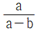
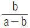
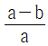
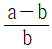
(정답률: 알수없음)
53. 18개 측선의 전체 길이가 1500m이고 위거오차와 경거오차가 각각 20cm, 46cm일 때 이 다각측량의 정확도는 얼마인가?
- 1/6000
- 1/4500
- 1/3700
- 1/2990
(정답률: 알수없음)
54. 지형도의 축척 1/1000, 등고선 간격 1.0m, 경사 2%일 때, 각 등고선 간의 도상수평거리는 얼마인가?
- 0.1cm
- 1.0cm
- 0.5cm
- 5.0cm
(정답률: 알수없음)
55. 트랜싯으로 수평각을 관측할 때 여러 오차를 소거하기 위하여 정ㆍ반위 관측값을 평균한다. 그러나 이러한 방법으로도 소거되지 않는 오차는?
- 시준축 오차
- 연직축 오차
- 편심 오파
- 수평축 오차
(정답률: 알수없음)
56. 수준척을 사용할 때 주의해야 할 사항이 아닌 것은?
- 수준척은 연직으로 세워야 한다.
- 관측자가 수준척의 눈금을 읽을 때에는 표척수로 하여금 수준척이 기계를 향하여 앞ㆍ뒤로 조금씩 움직이게하여 제일 큰 눈금을 읽어야 한다.
- 표척수는 수준척의 밑바닥에 흙이 묻지 않도록 하고, 이음매에서 오차가 발생되지 않도록 하여야 한다.
- 수준척을 세울 때는 지반의 침하여부에 주의하여야 하며, 침하하기 쉬운 곳에는 표척대를 놓고 그 위에 수준척을 세워야 한다.
(정답률: 알수없음)
57. 수평거리가 12km인 두 점 사이의 양차는 약 얼마인가? (단, 지구의 반경은 6371km, 대기굴절계수는 0.11이다.)
- 5m
- 10m
- 15m
- 20m
(정답률: 알수없음)
58. 다음 중 오차의 원인도 불분명하고, 오차의 크기와 형태도 불규칙한 형태로 나타나는 오차는?
- 정오차
- 우연오차
- 착오
- 체계적 오차
(정답률: 알수없음)
59. 삼각형을 이루는 각 점에서 동일한 정밀도로 각 관측을 하였을 때 발생한 폐합오차의 조정은 어떻게 하는가?
- 3등분하여 조정한다.
- 각의 크기에 비례해서 조정한다.
- 변의 크기에 비례해서 조정한다.
- 각의 크기에 반비례해서 조정한다.
(정답률: 알수없음)
60. P점의 높이를 직접수준측량에 의하여 A, B, C, D의 수준점에서 관측한 결과가 다음과 같다. P점의 최확값은?
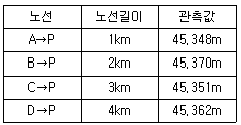
- 45.308m
- 45.394m
- 45.325m
- 45.355m
(정답률: 알수없음)
4과목: 측량학
61. 공공측량의 측량성과와 측량기록의 사본을 교부 받고자 하는 자는 어디에 신청하여야 하는가?
- 국토해양부장관
- 국토지리정보원장
- 지방국토관리청장
- 공공측량계획기관
(정답률: 알수없음)
62. 다음 중 일반측량으로서 공공측량으로 지정할 수 있는 측량은 어느 것인가?
- 국지적 측량으로서 국토해양부장관이 고시하는 측량
- 지적법에 의한 지적측량
- 10,000m2범위의 지형측량
- 지하시설물 측량
(정답률: 알수없음)
63. 다음 중 지도도식규칙에 위배되는 것은?
- 등고선은 주곡선, 간곡선, 조곡선 및 계곡선으로 구분하여 표시한다.
- 지도의 도곽은 외도곽과 내도곽으로 구분한다.
- 주기에 사용되는 한자는 자획이 복잡하더라도 약자로 사용하여서는 안된다.
- 지물의 실제 형상 또는 상질물의 표현은 선 또는 기호로 한다.
(정답률: 알수없음)
64. 다음 중 기본측량을 위하여 설치된 관할구역 안에 있는 측량표를 감시할 의무를 가진 사람은?
- 구청장
- 도지사
- 국토해양부장관
- 국토지리정보원장
(정답률: 알수없음)
65. 기본측량 실시 공고에 포함되어야 할 사항이 아닌 것은?
- 측량의 실시지역
- 측량기술자의 명단
- 측량의 목적
- 측량의 종류
(정답률: 알수없음)
66. 측량업자의 등록사항의 변경으로 인한 신고는 그 사유가 발생한 날로부터 최대 몇 일 이내에 하여야 하는가?
- 7일
- 15일
- 30일
- 20일
(정답률: 알수없음)
67. 축척 5만분의 1 미만의 지도를 국외로 반출하는 경우의 행정적인 절차로 옳은 것은?
- 허가 없이 반출할 수 있다.
- 국토해양부장관의 허가를 받아야 한다.
- 국토지리정보원장의 허가를 받아야 한다.
- 국토지리정보원장에게 신고하여야 한다.
(정답률: 알수없음)
68. 측량업자로서 경쟁입찰에 있어서 입찰자 간에 공모하여 미리 조작한 가격으로 입찰하거나, 다른 사람의 견적의 제출 또는 입찰행위를 방해한 자의 벌칙은?
- 200만원 이하의 과태료
- 1년 이하의 징역 또는 1000만원 이하의 벌금
- 2년 이하의 징역 또는 2000만원 이하의 벌금
- 3년 이하의 징역 또는 3000만원 이하의 벌금
(정답률: 알수없음)
69. 측량업의 등록기준이 아래 표와 같은 측량업은?
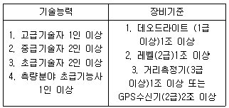
- 측지측량업
- 공공측량업
- 일반측량업
- 연안조사측량업
(정답률: 알수없음)
70. 다음의 측량표 중 일시표지에 해당되는 것은?
- 수준점표석
- 측표(測標)
- 표기(標旗)
- 임시측량표지막대
(정답률: 알수없음)
71. 측량업의 등록을 한 자는 등록사항 중 변경사항이 있을 경우 변경등록을 하여야 한다. 변경등록을 하여야 할 사항이 아닌 것은?
- 영업소 및 작업실 면적의 변경
- 상호의 변경
- 주된 영업소 소재지의 변경
- 기술능력 및 장비의 변경
(정답률: 알수없음)
72. 1:5,000 지형도 도식적용규정에 의하여 교량기호를 생략하고 도로로 표시할 수 있는 교량의 길이 기준은?
- 3m 미만
- 4m 미만
- 5m 미만
- 6m 미만
(정답률: 알수없음)
73. 우리나라의 지도에 사용되는 기로 및 선의 굵기는 누가 정하는가?
- 국토지리정보원장
- 국토해양부장관
- 행정안전부장관
- 국토연구원장
(정답률: 알수없음)
74. 성능검사기관은 성능검사결과 규정에 의한 성능기준에 적합하다고 인정되는 때에는 검사필증을 당해 측량기기에 붙여야 하는데 성능검사필증에 기재할 사항이 아닌 것은?
- 측량기기명 및 측량기기번호
- 검사유효기간
- 측량기기수명
- 측량기기성능
(정답률: 알수없음)
75. 측량심의회의 심의사항이 아닌 것은?
- 측량기술의 연구ㆍ발전에 관한 사항
- 측량도서의 발간에 관한 사항
- 공공측량에 관한 계획의 수립 및 실시에 관한 사항
- 공공측량 및 일반측량에서 제외되는 측량의 범위에 관한 사항
(정답률: 알수없음)
76. 측량협회의 설립목적으로 가장 거리가 먼 것은?
- 측량기술자 및 측량업자의 품위보전
- 측량업의 관리ㆍ감도
- 측량에 관한 기술의 향상에 기여
- 측량제도의 건전한 발전에 기여
(정답률: 알수없음)
77. 일반측량업의 등록을 한 측량업자는 설계금액이 최대 얼마인 공공측량을 실시할 수 있는가?
- 5천만원
- 3천만원
- 2천만원
- 1천만원
(정답률: 알수없음)
78. 기본측량의 측량성과를 사용하여 지도 등을 간행하고자 할 때 국토지리정보원장의 심사를 받아야 하는데 이 때 심사사항이 아닌 것은?
- 표준작업방법
- 난외표시
- 작업주기 및 일자
- 지형ㆍ지물 및 지명의 표시
(정답률: 알수없음)
79. 측량업 등록의 결격사유에 해당하지 않는 것은?
- 파산선고를 받고 복권되지 아니한 자
- 벌금형 선고를 받은 자
- 금치산자
- 측량업의 등록이 취소된 후 2년이 경과되지 아니한 자
(정답률: 알수없음)
80. 국토해양부장관의 권한 중 국토지리정보원장에게 권한위임한 사항이 아닌 것은?
- 기본측량의 실시에 관한 통지
- 기본측량을 위한 표지설치의 통지
- 기본측량의 측량성과의 고시
- 공공측량작업규정의 승인
(정답률: 알수없음)